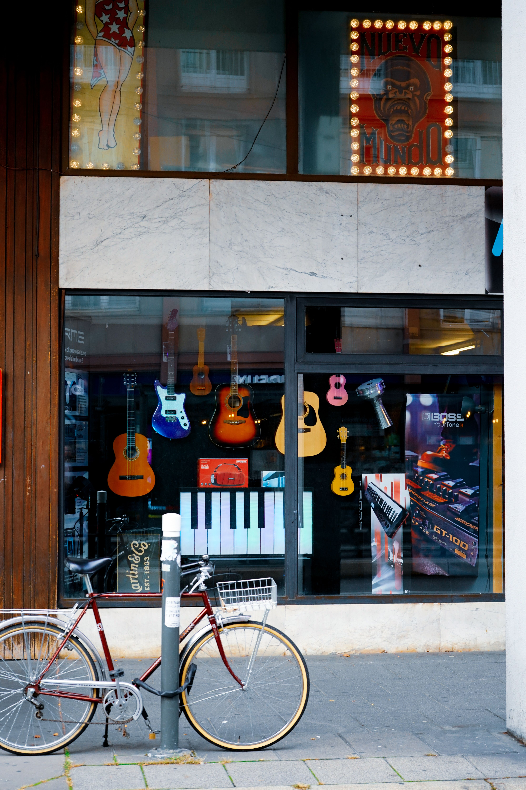
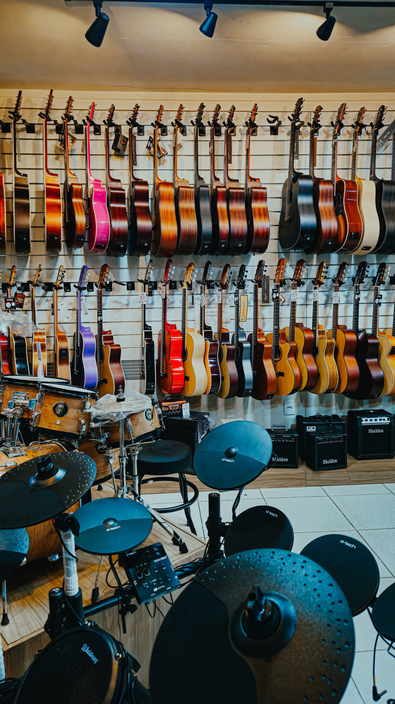
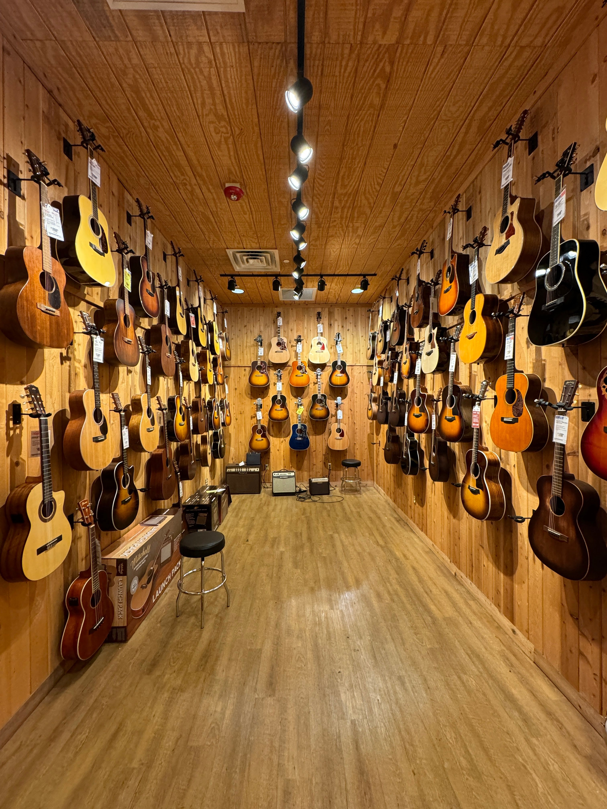

Experiencia
Más de una década asesorando a bandas, productoras y músicos independientes para ayudarles a encontrar su sonido ideal.

Nacimos hace 11 años en el corazón de Viña del Mar con una sola misión: equipar a los músicos de la Región de Valparaíso y de todo Chile con los mejores instrumentos y equipos de audio.
Más de una década asesorando a bandas, productoras y músicos independientes para ayudarles a encontrar su sonido ideal.

Trabajamos exclusivamente con marcas reconocidas a nivel mundial, asegurando durabilidad, fidelidad y un rendimiento óptimo.

No solo somos una tienda; te acompañamos en la postventa con un equipo de expertos listos para resolver cualquier duda.